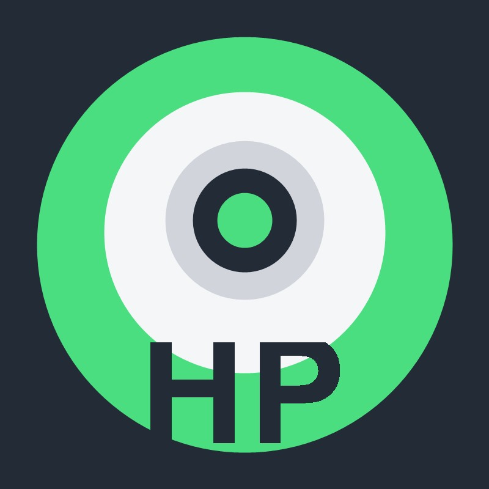

HTML5
Estruturação e organização de páginas web.
Apaixonado por tecnologia, criatividade e inovação. Gosto de transformar ideias em projetos e estou sempre em busca de novos conhecimentos.

criatividade & tecnologia ♡Sou profissional de tecnologia, com atuação voltada para Quality Assurance. Tenho interesse em qualidade de software, testes automatizados e melhoria contínua.
Acredito que qualidade é essencial para transformar ideias em soluções confiáveis. Por isso, busco constantemente aprimorar processos e contribuir para entregas cada vez melhores.
Algumas das tecnologias e áreas que fazem parte da minha formação.
Estruturação e organização de páginas web.
Estilização, layouts e responsividade.
Lógica de programação e interatividade.
Versionamento e gerenciamento de projetos.
Automação, sensores e sistemas industriais.
Criação de soluções e aplicações tecnológicas.
Conhecimentos colocados em prática através de projetos.
Desenvolvimento de um site pessoal para apresentar habilidades, conhecimentos e projetos utilizando HTML e CSS.
Projeto de monitoramento de temperatura em motores industriais, com sensores, alertas e sistema de resfriamento auxiliar.
Desenvolvimento de aplicações e experiências práticas para aprimorar conhecimentos em programação e tecnologia.
Estou sempre aberta a aprender, compartilhar ideias e conhecer novas oportunidades.